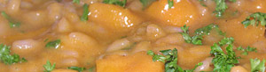

Risotto con Zucca e Vino Rosso (nach Elia Rizzo vom il Desco (VR))
6 von 6ca 500gr kürbisschnitze mit zwiebeln andämpfen. mit etwas milch, 3dl rotem wein und 1dl gemüse bouillon ablöschen. 15 min köcherln lassen. mit stabmixer zekleinern und beiseite stellen. nun risottoreis, kürbiswürfel und zwiebeln in butter andämpfen. mit wasser ablöschen und unter stetigem rühren die vorbereitete masse langsam beigeben. parmesan, pfeffer und petersilie dazu.
